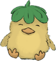
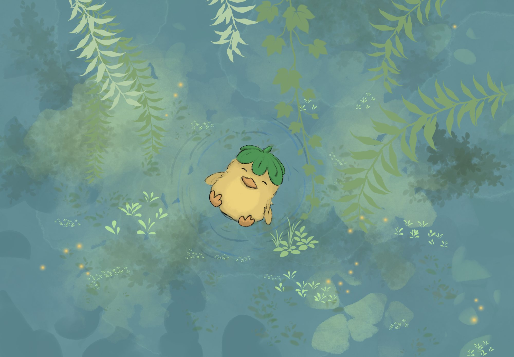

A collection of my work
Designing a new way to check the weather.
A campaign to help communities plant native and protect pollinators.
An alcohol awareness campaign for college students.
A hand-drawn race shirt for the Bayside Historical Society.